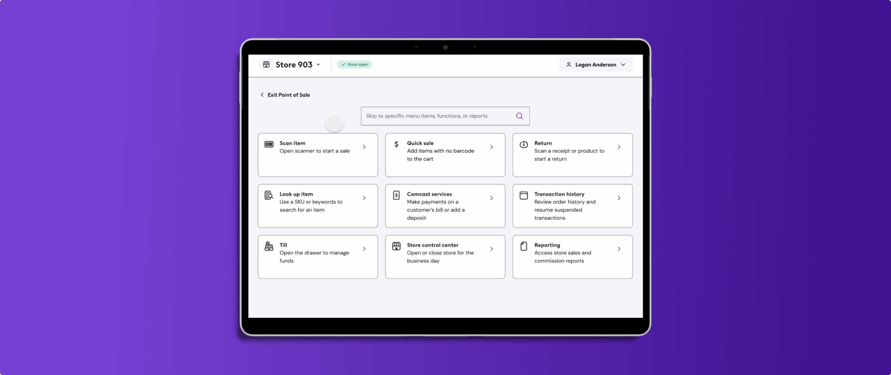
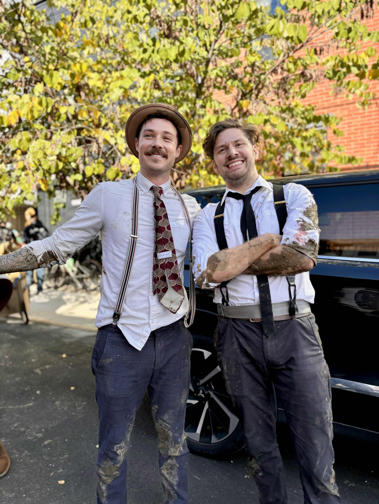

Featured work

Redesigning an Enterprise Platform at Scale: Leading an 18-Month, $1.6M Engagement for Meevo

Product Design Leader
I'm a product design leader in Philadelphia, PA
I can do anything

Product Design Lead
I'm a product design leader, teacher, tool nerd, chaos organizer, and enthusiastic maker of mildly unreasonable things.
I've been chasing new ways to make things for as long as I can remember. After graduating into the post-recession design wasteland of 2010, I spent years trying to find the kind of work that actually felt meaningful. UX became the place where everything finally clicked: creativity, technology, research, systems, and the extremely satisfying act of turning a giant tangled mess into something people can actually use. Since then, I've built a career around being early to the next thing, from Photoshop to Sketch to Abstract to Figma to AI, then learning it deeply enough to help other people use it without wanting to throw their laptop into the sea.
That instinct shows up in pretty much everything I do. At work, it means building design systems, improving messy processes, experimenting with AI-assisted workflows, and trying to make life easier for designers, developers, product owners, stakeholders, and the occasional future robot assistant. Outside of work, it means teaching UX at Drexel, building a mobile 1920s speakeasy for a kinetic sculpture derby, organizing an annual pirate-themed rafting trip, and producing wildly overcomplicated New Year's roleplaying games for my friends. The common thread is probably that I like taking big, chaotic, ridiculous ideas and somehow making them real.
Mostly, I'm driven by curiosity, momentum, and the belief that work gets better when people are allowed to care deeply and have some fun while doing it. I don't need to be the most important person in the room. I just want to build things that feel useful, teach people what I've learned, keep finding better ways to work, and maybe sneak in one inappropriate joke before the meeting ends.

I joined Think Company as an Experience Designer in 2018 and have grown into a Design Lead role, progressing through Senior and Principal levels along the way. Over seven years of consulting, I've led design strategy and execution for complex enterprise products across telecom, healthcare, e-commerce, SaaS, and retail.
Most recently, I served as Design Lead for Meevo's multi-phase product redesign — a $1.6M+ engagement where I guided UX strategy, managed and mentored a team of 3–5 designers, and drove cross-functional alignment with product, engineering, and executive stakeholders. Before that, I led design under high-stakes conditions for Comcast's in-house point-of-sale system, stepping into a leadership gap and keeping a business-critical product on track for delivery.
Across my tenure, I've led and contributed to multiple design systems — including Comcast Business, Merck Vivid360, Comcast Celestial, and Meevo — establishing reusable component libraries, governance models, documentation standards, and scalable Figma architectures.
I've also spearheaded Figma adoption and process standardization across nearly every client I've worked with. I've even guided Newell Brands through a Sketch-to-Figma migration for their 300+ brand e-commerce ecosystem, training designers, building file structures, and laying the groundwork for a scalable white-label design system.
More recently established an AI-assisted design operations framework using a shared GitHub repository for agentic workflows covering UX strategy, ticket elaboration, design system documentation, and research synthesis.
I've been an Adjunct Professor of Interactive Digital Media at Drexel since 2023, teaching a 200-level UX course that guides 15–20 students each semester through the full product design process — from research and information architecture through wireframing, prototyping, usability testing, and final product storytelling. During this time, I've had to consistently redesign the course materials and in-class activities to better reflect modern UX practice, team-based product work, and current industry expectations.
As Product Design Lead, I led the design team's transition from Sketch to Figma, rebuilding the org's file structure and end-to-end UX process within six months. I established the company's first design system using a federated, atomic model across foundations, components, and web/native mobile patterns. I also mentored a cross-functional design team, introduced governance rituals, and improved collaboration across UX, brand, marketing, product, and engineering.